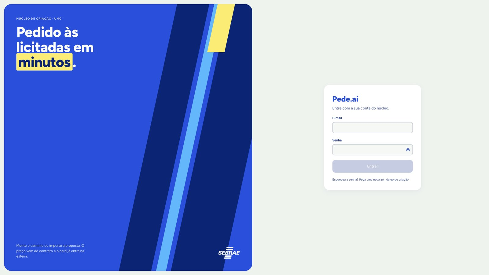
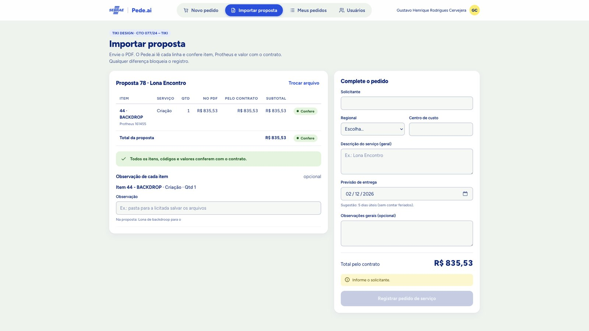

A versão final, em React, no ar desde 23/11. Clique para ampliar.
Pede.ai
De um processo manual a um sistema em produção
Plataforma interna do Sebrae/PR pra fazer pedidos às empresas contratadas por licitação. Escolhe o item, informa as medidas e o pedido sai pronto, com o preço do contrato calculado pelo sistema e tudo guardado num banco.
trabalho · sebrae/pr · 2026 · versão final no ar
problema
Pedir material às licitadas era manual: conta de área e sangria na mão, centro de custo trocado entre regionais e nenhum histórico.
meu papel
Concebi e construí o sistema, da regra de negócio na API ao banco, aos testes e à tela.
resultado
Versão final em React no ar desde 23/11, depois de 19 versões. 378 testes automatizados, pedido abrindo em 1,3 s (antes até 8 s) e o fluxo de serviço entregue 3 semanas antes do prazo.
Telas





Do manual ao sistema
Quem produz o material do núcleo de criação são empresas contratadas por licitação, cada uma com uma tabela de itens e preços no contrato. Todo pedido saía dessa planilha, feito à mão.
- erro de contaAntes: base, altura, sangria, quantidade e valor do m², tudo na mão.Agora o servidor calcula pelo contrato; a pessoa só informa medida e quantidade.
- centro de custoAntes: a despesa de uma regional caía no orçamento de outra.Agora o alerta diz de que regional é o CC, e só segue quem confirma (fica registrado).
- retrabalhoAntes: o mesmo dado digitado no pedido, na etiqueta e no Ummense.Agora um preenchimento gera tudo, e o card entra sozinho na esteira.
- proposta em PDFAntes: conferida linha a linha contra o contrato.Agora o sistema lê e confere; qualquer divergência bloqueia o registro.
- históricoAntes: o pedido existia só como o arquivo enviado.Agora tudo fica no banco: baixar de novo, duplicar, cancelar.
O que ele faz
- Impressão: pedido em 3 etapas, vitrine do contrato, sangria opcional e um destino por item.
- Serviço: lê a proposta em PDF e confere cada linha; testado com 8 propostas reais, 100% certas.
- Esteira: o card do pedido é criado sozinho no Ummense, um envio por pedido.
- Conta: login individual, histórico e administração de usuários.
Decisões
-
01
Validar antes de polir
O MVP em Streamlit foi para produção primeiro. Só depois de validado o uso real, a versão final em React o substituiu, sem mudar nenhuma regra, porque toda a regra mora na API.
-
02
O preço nunca vem de quem usa
A tela manda item e medidas; o servidor recalcula pelo contrato, em Decimal, e grava um retrato de cada item. Um teste de estresse achou 1 centavo a menos em 0,1% dos itens, e a conta mudou.
-
03
Nada é apagado
Pedidos e eventos só aceitam inserção, garantido pelo próprio banco. A API usa um usuário que só lê e insere, e nenhuma rota de dado é pública.
Versões
- v0.1 · 28/05MVP no ar
- v0.7 · 06/10banco, segurança, login e histórico
- v0.10 · 13/10leitura de PDF; serviço no ar 3 semanas antes do prazo
- v0.12 · 19/11card automático no Ummense
- v1.0 · 23/11versão final em React substitui o MVP
- v1.1.3 · 25/11ajustes pedidos no uso real
19 versões em seis meses. Todas no GitHub ↗
O que aprendi
código
Decimaldinheiro sem erro de arredondamento- Rotas FastAPIa regra de negócio num lugar só
- Gatilhos no PostgreSQLtabelas que só aceitam inserção
- Pool de conexõesmenos tempo negociando com o banco
- Testes de estresse e ponta a ponta378 testes em 13 arquivos, com dado aleatório
- scrypt e token assinadosenha e sessão
ferramentas
- Python e FastAPIAPI, no Render
- StreamlitMVP, a primeira versão
- PostgreSQL no Supabasebanco
- pytesttestes
- React e Viteversão final, no ar
- Claude Codepar de programação, guiado pelo CLAUDE.md